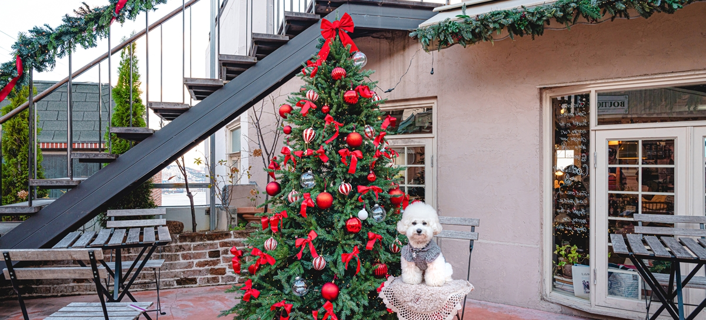
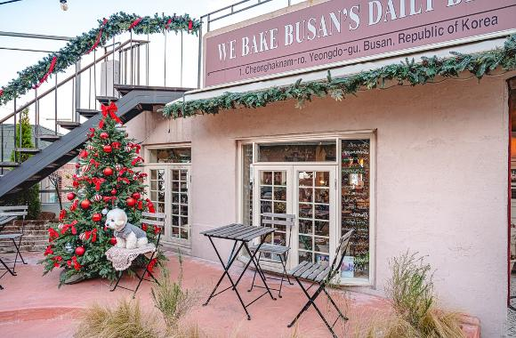
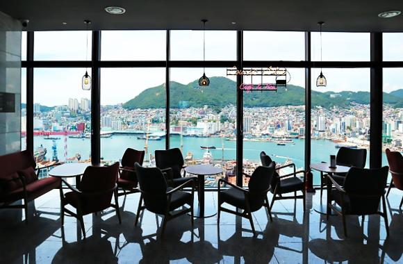
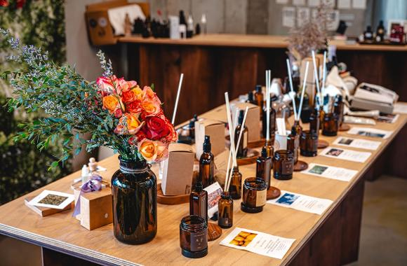
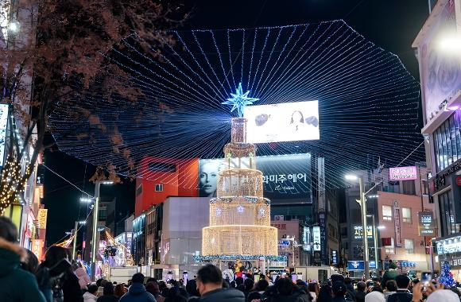

"겨울빛 따라 영도에서 광복로까지", 로컬 감성 물씬 당일 추천코스
겨울을 맞아 부산 광복로에 ‘겨울빛 트리축제’가 열렸습니다! 더욱 화려해진 광복로와 함께, 영도에서 광복로까지 빛나는 부산여행 즐겨봐요~!
추천코스 꼬쇼네 → 아델라베일리 부산 → 로칼 → 광복로 겨울빛 트리축제


"꼬쇼네" 마스코트 강아지 ‘꼬쇼’와 함께 유럽풍의 예쁜 인테리어로 유명한 영도 오션뷰 카페, ‘꼬쇼네’.주말에는 웨이팅이 필수일 만큼 인기 있는 베이커리&브런치 카페인데요. 화사한 인테리어뿐만 아니라 맛있고 특별한 빵으로도 소문난 곳입니다.

"아델라이 부산" 24층 높이에서 펼쳐지는 탁 트인 전망! 영도대교 전경을 감상할 수 있는 양식 레스토랑, 아델라베일리 부산입니다. 단품 및 코스 요리 모두 기본을 탄탄히 갖춘 곳인데요. 런치에는 세미 뷔페가 운영되기 때문에, 여러 가지 메뉴를 원하는 만큼 맛볼 수 있습니다. 생일과 같은 특별한 날 스테이크 주문 시 ‘레터링 서비스’도 제공되는 등, 이벤트 요소도 가득합니다.

"로칼"영도 복합문화공간 AREA6에 입점한 향수 공방, ‘로칼’. ‘지역’이라는 뜻의 영단어 rocal을 부산식 발음으로 표기한 상호명처럼, 부산의 여러 명소를 테마로 한 조향 제품을 선보이는 곳입니다.

"광복로 겨울빛 트리축제"다양한 크기와 모양을 가진 트리가 광복로를 화려하게 수놓는 『광복로 겨울빛 트리축제』. 매일 밤 아름다운 노래와 화려한 공연으로 추운 겨울밤을 따뜻하게 물들이는 성대한 축제를 즐기러 남포동으로 갑니다.